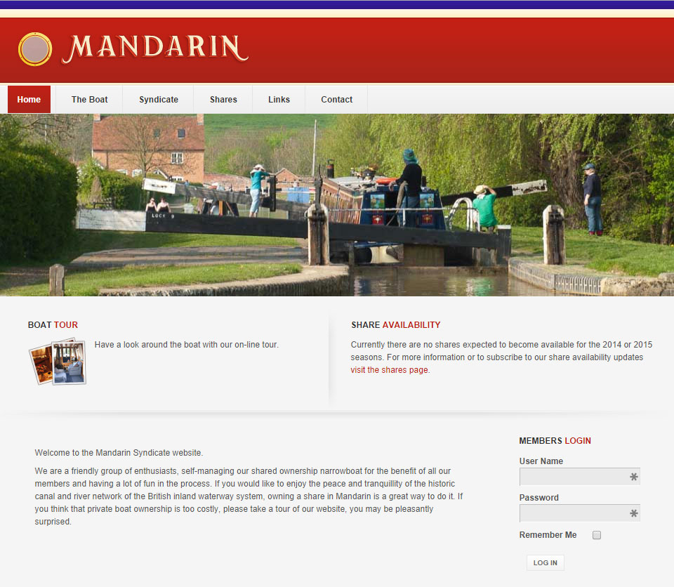
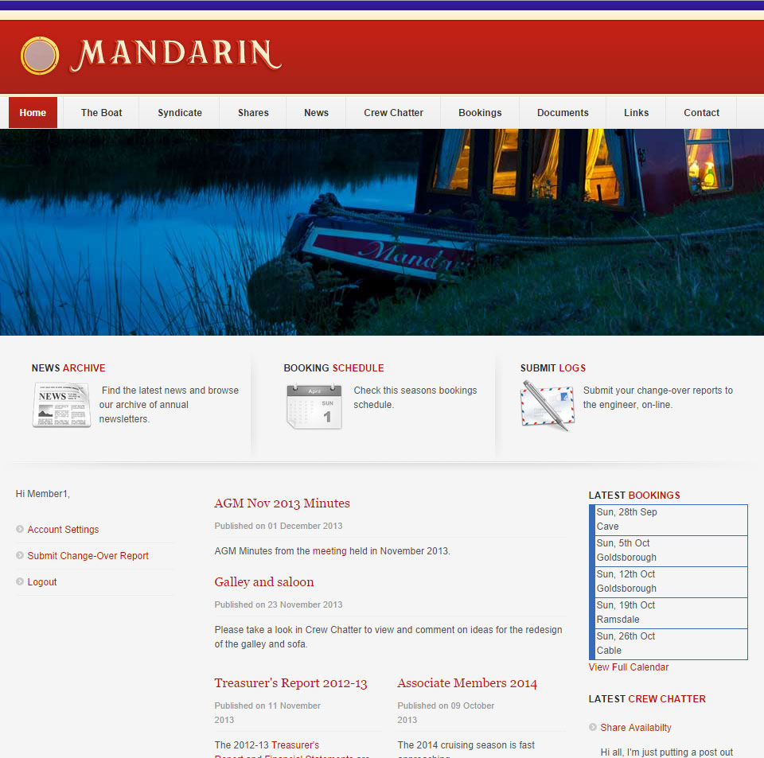

Brief
The Mandarin Syndicate wanted a website to promote share availability and provide a central hub of information for its members.
Key features include:
- Boat Tour
- Members News
- Members Chat Area
- Document Archive
- Bookings Calendar
Homepage

Members
